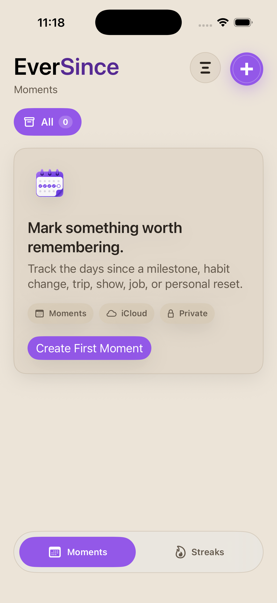

How do I add a moment?
Open EverSince and choose the add button. Enter a title, choose Days Since or Days Until, choose the date, select a category, and save. New moments appear in the event list with their day count.
Support
EverSince is a private, local-first app for tracking days since, days until, and daily streaks. This page covers common tasks, local storage, reminders, troubleshooting, and how to contact support.
Support email: contact@absessive.com

EverSince does not use a separate email and password login. On iOS, the current release stores your moments, categories, and streaks locally on your iPhone. The app continues to work offline without a network connection.
Quick help for creating, changing, and organizing moments.
Open EverSince and choose the add button. Enter a title, choose Days Since or Days Until, choose the date, select a category, and save. New moments appear in the event list with their day count.
Tap a moment from the list to open its detail view, then choose Edit. You can update the title, date, category, or direction, then save the updated moment.
Open the moment detail view and choose Delete. EverSince asks for confirmation before removing a moment so accidental deletes are less likely.
Open a moment detail view and choose Reset to Today. EverSince can ask for confirmation before changing the original date, and you can show that warning again from Help & About.
Categories organize moments and streaks into types like Personal, Entertainment, Work, Health, Travel, or custom categories you create. A category can provide the default icon and color for items inside it.
In Manage Categories, choose the option to create a custom category. Add a name, icon, and color, then save. Built-in categories stay available, and custom categories can be deleted later.
Use the Streaks tab to track habits you want to keep active. Check in when you complete a streak, restart inactive streaks, and optionally enable daily reminder notifications.
The current release includes moments, Days Until, streaks, reminders, categories, appearance settings, and Help & About. There are no account screens in this version.
EverSince is designed to be local-first. You can create and view moments without a network connection. In the current release, your EverSince data stays on your iPhone.
Try these steps before contacting support.
Confirm that EverSince is installed normally and has not been removed or offloaded from the device. Reinstalling can remove local app data that has not been backed up by iOS.
If an item looks missing, switch back to All and confirm whether you are viewing Moments or Streaks.
Close and reopen EverSince if a count, category, or setting does not look current.
If the issue continues, email support with your device model, iOS version, EverSince version, and a short description of what happened.